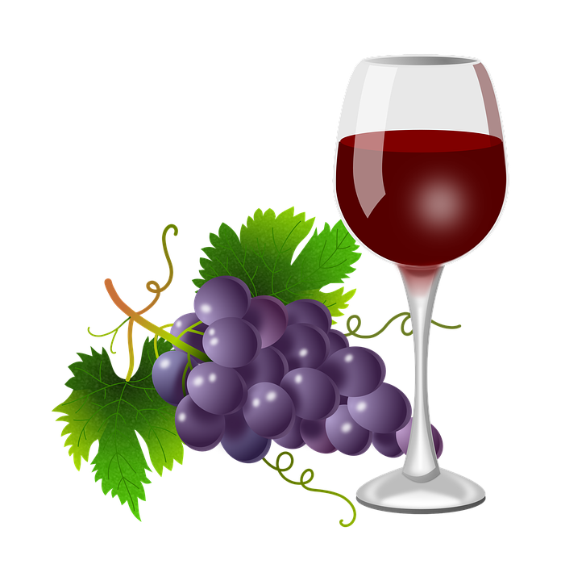
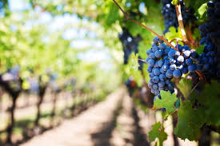
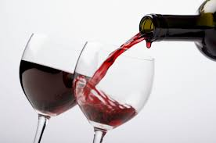
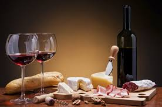

Viini on tuoreista viinirypäleistä tai rypälemehusta käyttämällä valmistettu mieto alkoholijuoma. Viineissä on alkoholia yleensä 10–15 prosenttia, ja niiden alkoholi on yksinomaan käymisteitse muodostunut.
Historia
Vanhimmat todisteet viinistä ovat löytyneet Zagrosvuorten pohjoisrinteiltä nykyisen Iranin alueelta yli 7 000 vuoden takaa. Kaukasukselta Kaspianmeren rannalta on tehty sitäkin vanhempia löytöjä, mutta niissä on voinut olla kyse luonnonvaraisesta eikä viljellystä viinirypäleestä

Rypäleet
Rypälelajike, josta viini tehdään, määrää aromin ja maun peruslaadun. Merkittävimmät tummat rypälelajikkeet ovat Cabernet Sauvignon, Merlot, Syrah (Euroopan ulkopuolella nimellä Shiraz) ja Pinot Noir ja merkittävimmät vaaleat rypälelajikkeet Chardonnay, Sauvignon Blanc ja Riesling.

Viljely
Viiniköynnös viihtyy köyhässä maaperässä; liian rikkaassa maaperässä se tuottaa liian suuren sadon, minkä seurauksena maku kärsii. Paras maaperä viininviljelyyn on mineraalipitoinen ja hyvin vettä läpäisevä. Köynnös vaatii kasvukautena paljon aurinkoa, minkä takia sään vaihtelu vaikuttaa viinisadon epätasaisuuteen.

Luokitus
Suurimmat viinimaat ottivat 1900-luvulla käyttöön yksi kerrallaan omat alkuperäluokituksensa, joilla on pyritty takaamaan viinin alkuperä, valmistustapa ja käytetyt lajikkeet.

Tarjoilu
Viiniä nautitaan sellaisenaan tai ruoan kanssa. Viini suositellaan nauttimaan jalallisesta, ylöspäin kapenevasta viinilasista, jossa viini ei lämpene kädestä ja jossa sen tuoksu tulee parhaiten esiin.